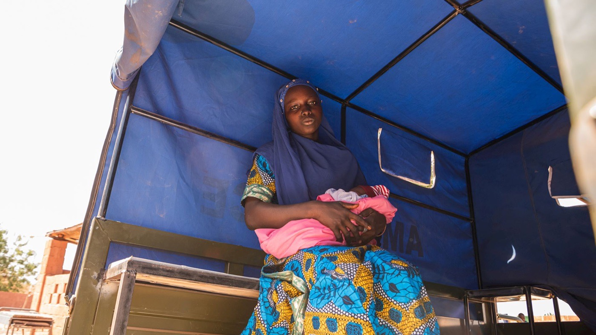
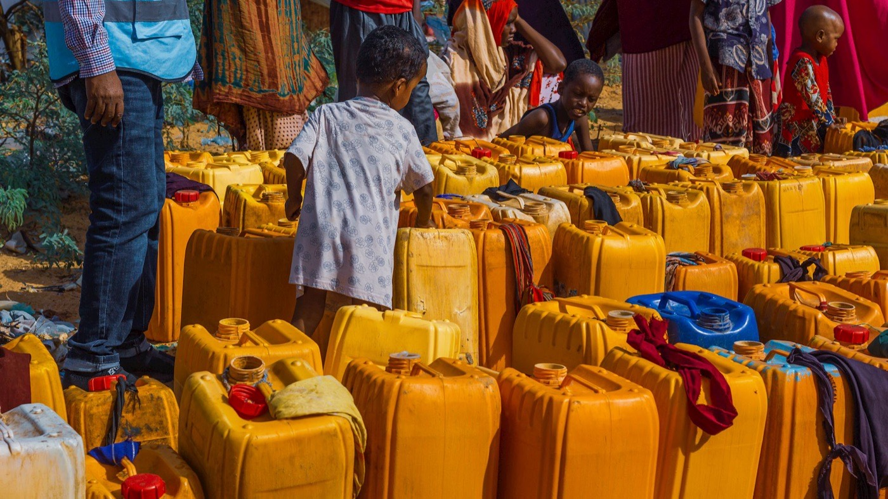
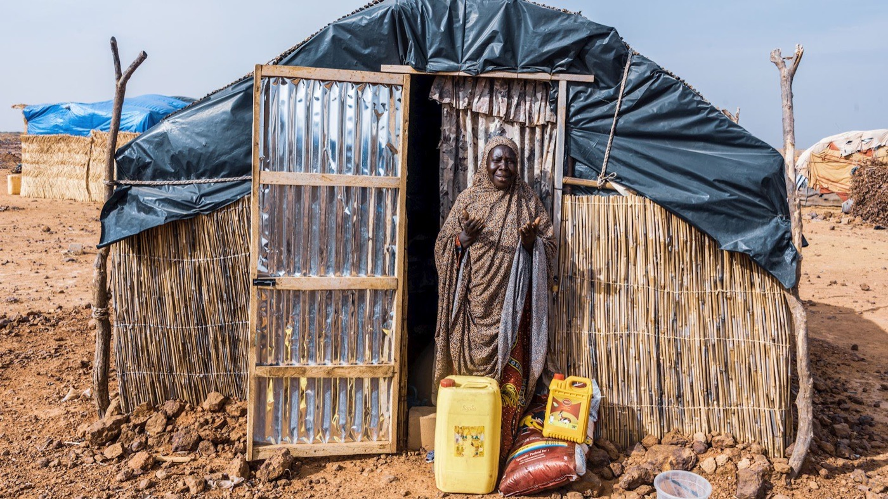
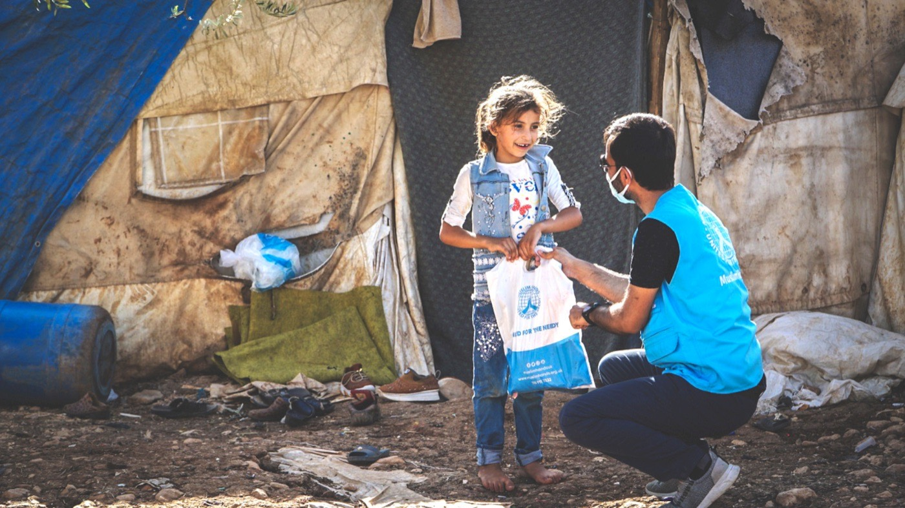
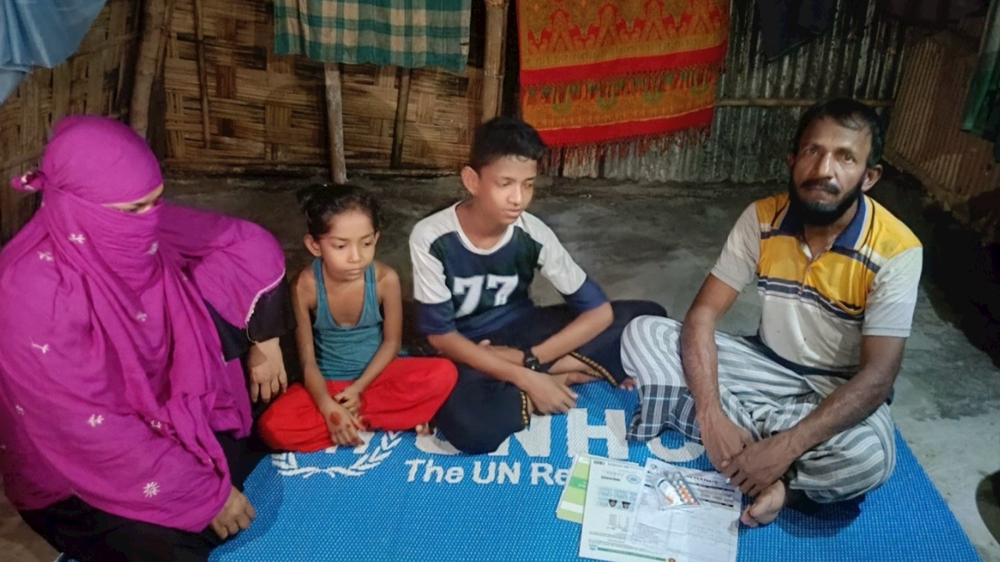
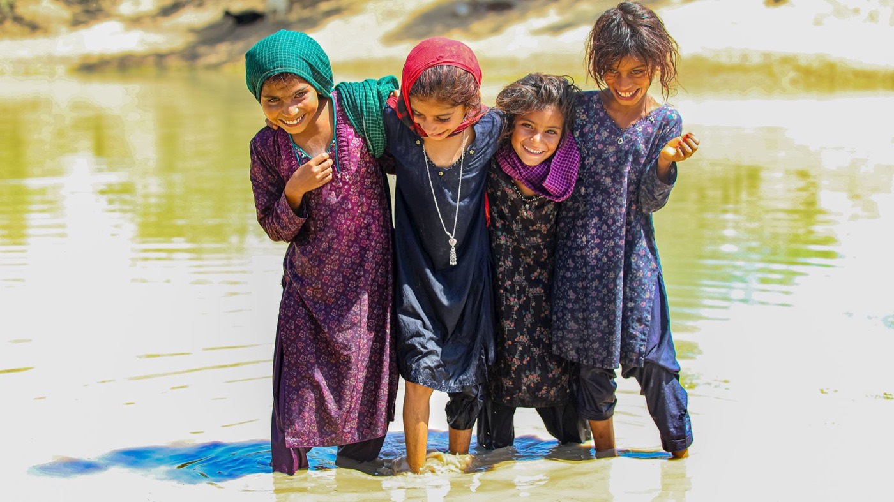

Depuis octobre 2023
- Premières distributions sous 72 heures grâce à nos bureaux locaux
- Reçu fiscal immédiat : 100 € vous coûtent 34 €
- Bilan public à la fin de chaque campagne
6urgences ouvertes aujourd'hui
450 000repas servis à Gaza en 2024
18 000colis distribués au Soudan depuis 2023
80 %des ressources en missions sociales
Urgences actives
Six crises où votre don agit dès cette semaine
Chaque urgence a sa date de mise à jour et sa fiche de don. Cliquez pour comprendre la situation et choisir ce que vous financez.
 Depuis avril 2023
Depuis avril 2023Soudan
Aider le Soudan
Crise prolongéeYémen
Aider le Yémen Sécheresse et inondations
Sécheresse et inondationsSomalie
Aider la Somalie
Depuis mars 2026Liban
Aider le Liban Séismes et faim
Séismes et faimAfghanistan
Aider l'Afghanistan
Engagé sous 72 heures.
Le fonds des urgences nous permet de lancer les premières distributions avant même qu'une campagne soit publiée.
Donner au fonds des urgencesUrgences
La situation aujourd'hui, mise à jour le 21 octobre 2026
Le monde compte plus de 120 millions de personnes déplacées par la guerre, la faim ou le climat. Trois crises concentrent nos moyens cet automne. À Gaza, deux millions de personnes vivent sous des tentes, et l'accès à l'eau potable reste le premier besoin. Au Soudan, la famine est déclarée dans plusieurs camps du Darfour et les familles continuent d'arriver dans l'est du pays, en pleine saison des pluies. Au Yémen, dix ans de guerre ont ruiné l'économie : deux habitants sur trois dépendent de l'aide pour manger.
À côté de ces trois urgences, nous maintenons des programmes de crise prolongée en Somalie, au Liban et en Afghanistan. Les photos et les rapports de nos équipes sont publiés dans les actualités.

Donner, concrètement
Fonds des urgences
100 € vous coûtent 34 € après réduction d'impôt de 66 %.
Je donne pour les urgencesEngagé sous 72 heures · éligible à la zakat · reçu fiscal immédiat
Urgences
Comment l'aide arrive-t-elle sur place ?
Muslim Hands ne parachute pas d'équipes : le réseau est présent depuis des années dans chaque pays, avec des bureaux et des salariés locaux. C'est ce qui nous permet d'agir vite, d'acheter sur les marchés locaux quand c'est possible et de connaître les familles les plus fragiles.
Sous 72 heures
Le bureau Muslim Hands du pays et ses partenaires lancent les premières distributions : eau, repas chauds, kits d'hygiène.
Les premières semaines
Nourriture, abris, soins et protection des enfants : les besoins vitaux d'abord, avec le Programme alimentaire mondial là où il est présent.
Les mois suivants
Reconstruction, forages, écoles, moyens de subsistance : pour que les familles n'aient plus besoin de l'aide.
Le bilan
Listes de bénéficiaires, factures et photos remontent à Paris. Chaque campagne close reçoit un bilan public.

Urgences
Que finance mon don d'urgence ?
Chaque montant correspond à une action précise. Les prix sont ceux de nos achats sur place, revus chaque trimestre.
| Don | Ce qu'il permet | Fiche |
|---|---|---|
| 3 € | Un repas chaud servi dans une cuisine communautaire de Gaza | Donner |
| 25 € | Un kit d'hygiène pour une famille déplacée au Soudan | Donner |
| 50 € | Un colis alimentaire pour une famille pendant un mois | Donner |
| 100 € | De l'eau potable pour dix familles pendant un mois, par camion | Donner |
| 150 € | Un abri d'urgence : tente, bâches, couvertures pour une famille | Donner |
| 39 € / mois | Le parrainage d'un orphelin de guerre, logé dans sa famille élargie | Parrainer |
Vous préférez un geste qui dure ? Un puits ou une sadaqa jariya installés dans une zone de crise continuent d'agir vingt ans après l'urgence.
Urgences
Fonds des urgences ou don fléché ?
Le fonds des urgences est le plus utile : il nous permet de réagir le jour même à une inondation, un séisme ou un déplacement massif, sans attendre qu'une campagne soit publiée et que les premiers dons arrivent. Nous l'engageons là où le besoin est le plus grand et nous rendons compte de son usage dans le rapport annuel.
Le don fléché va intégralement au pays que vous choisissez : Gaza, Soudan, Yémen, Somalie, Liban ou Afghanistan. Si une campagne fléchée reçoit plus que ce que le terrain peut absorber, nous vous le disons et nous vous proposons de réaffecter le surplus. Un don d'urgence peut être votre zakat : cochez la case lors du paiement.

Urgences
Bilan chiffré 2024
450 000 repas
Servis à Gaza avec le Programme alimentaire mondial, plus 12 000 colis alimentaires.
Eau potable
Camions-citernes à Gaza et en Somalie, six points d'eau réhabilités au Soudan, forage d'Akkar au Liban.
Soins
Cliniques de Kaboul et de Mogadiscio, 2 400 enfants suivis en nutrition au Soudan, 3 500 kits d'hygiène à Gaza.
620 orphelins
Orphelins de guerre de Gaza parrainés dans leur famille élargie, suivi scolaire et médical.

Urgences
Votre don d'urgence et vos impôts
Muslim Hands France est une association d'intérêt général. Votre don d'urgence ouvre droit à une réduction d'impôt sur le revenu de 66 % de son montant, dans la limite de 20 % du revenu imposable : 100 € vous coûtent 34 €, 250 € vous coûtent 85 €. Le reçu fiscal est envoyé par e-mail immédiatement après le paiement. Les entreprises bénéficient de 60 % de réduction d'impôt sur les sociétés. Tout savoir sur la déduction fiscale.
Urgences
Questions fréquentes sur les dons d'urgence
Fonds des urgences ou don fléché : que choisir ?
Le fonds des urgences nous laisse engager votre don là où le besoin est le plus grand, sous 72 heures, y compris pour une crise qui n'a pas encore sa page. Un don fléché (Gaza, Soudan, Yémen…) va intégralement au pays que vous choisissez.
Comment l'aide arrive-t-elle sur place ?
Muslim Hands dispose de bureaux et de partenaires installés depuis des années dans chaque pays. Ils achètent sur place quand c'est possible, distribuent eux-mêmes et nous envoient listes de bénéficiaires, photos et factures.
Quelle part de mon don arrive aux bénéficiaires ?
80 % des ressources de l'association sont consacrées aux missions sociales, 20 % à la collecte et au fonctionnement. Les comptes sont certifiés et publiés chaque année sur la page Transparence.
Mon don d'urgence est-il déductible des impôts ?
Oui. Muslim Hands France est une association d'intérêt général : 66 % du montant est déductible de l'impôt sur le revenu, dans la limite de 20 % du revenu imposable. 100 € vous coûtent 34 €. Le reçu fiscal est envoyé par e-mail immédiatement.
Puis-je donner ma zakat pour une urgence ?
Oui. Les victimes de guerre, de famine et de catastrophe font partie des ayants droit de la zakat. Cochez la case « Zakat » lors du don : il rejoint le fonds zakat, tracé séparément.
Que devient une urgence terminée ?
Elle n'est jamais effacée. Chaque campagne close reçoit un bilan public, visible en bas de cette page, avec le nombre de familles aidées et ce qui a été construit.
Campagnes closes
Ce que vos dons ont permis
Une urgence terminée n'est pas effacée. Voici le bilan de chaque campagne close, tel qu'il a été transmis aux donateurs.
| Campagne | Période | Bilan |
|---|---|---|
| Inondations au Népal | octobre 2025 | 1 200 familles : abris, kits d'hygiène, eau potable. |
| Incendies en Algérie | août 2025 | Aide d'urgence à 900 familles sinistrées de Kabylie. |
| Inondations au Pakistan | 2022 à 2024 | Distribution puis programme d'autonomie : 3 000 familles, 40 forages réhabilités. |
| Séisme en Afghanistan | octobre 2023 | Clinique mobile et 500 abris d'hiver dans la province d'Hérat. |
| Séisme au Maroc | septembre 2023 | Colis, tentes et chauffage pour 700 familles du Haut Atlas. |

Après l'urgence
Du secours à l'autonomie
Au Pakistan, la distribution de 2022 a laissé place à un programme de trois ans : 40 forages réhabilités, des semences et du bétail pour 3 000 familles. C'est notre règle : chaque urgence débouche sur un projet qui dure. Découvrir nos programmes de développement.